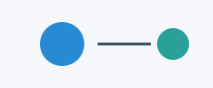

1 Объекты для перекрёстных ссылок

| Входное значение | Ограничение интервалом [0, 10] |
|---|---|
| -2 | 0 |
| 5 | 5 |
| 12 | 10 |
value = 12
print(min(10, max(0, value)))\[x^2 + y^2 = 1 \tag{1.1}\]
Сопоставьте модель интервала с контрактом из Контракт программы.
Проверьте нижнюю и верхнюю границы, затем значение внутри интервала.
До вычисления результата проверьте, что нижняя граница не больше верхней.
Сохраняйте ID объекта при переносе между разделами.
Не используйте арифметику, которая может переполниться на границах типа.
Теорема 1.1 (Ограничение интервалом) Если \(a \le b\), число \(\min(b, \max(a, x))\) принадлежит \([a,b]\).
Лемма 1.1 (Значение внутри интервала) Если \(a \le x \le b\), ограничение сохраняет \(x\).
Следствие 1.1 (Идемпотентность ограничения) Повторное ограничение тем же интервалом не меняет результат.
Утверждение 1.1 (Порядок операций) Сначала ограничиваем значение снизу, затем сверху.
Гипотеза 1.1 (Перенос на другие типы) Исследуйте, для каких упорядоченных типов сохраняются те же свойства.
Определение 1.1 (Замкнутый интервал) Интервал \([a,b]\) содержит обе границы и значения между ними.
Пример 1.1 (Число за верхней границей) Для \(x=12\) и интервала \([0,10]\) результат ограничения равен 10.
Упражнение 1.1 (Проверка граничных случаев) Вычислите результат для -2, 0, 5, 10 и 12 в интервале \([0,10]\).
Решение 1.1 (Разбор граничных случаев). Получаем соответственно 0, 0, 5, 10 и 10: внешние значения заменяются ближайшей границей.
Примечание 1.1 (Обычные объекты Quarto). Эта книга не включает Course банк: примеры и решения используют native разметку.
Algorithm 1.1 (Последовательность ограничения) Проверьте порядок границ, сравните значение с каждой границей и верните результат.
Запись разбора граничных случаев служит примером пользовательского типа объекта.
Доказательство. Если \(x<a\), возвращается \(a\); если \(x>b\), возвращается \(b\); иначе возвращается \(x\). Во всех трёх случаях результат принадлежит интервалу.
Лекция: Хранение объектов. Практика: Упражнение 1.